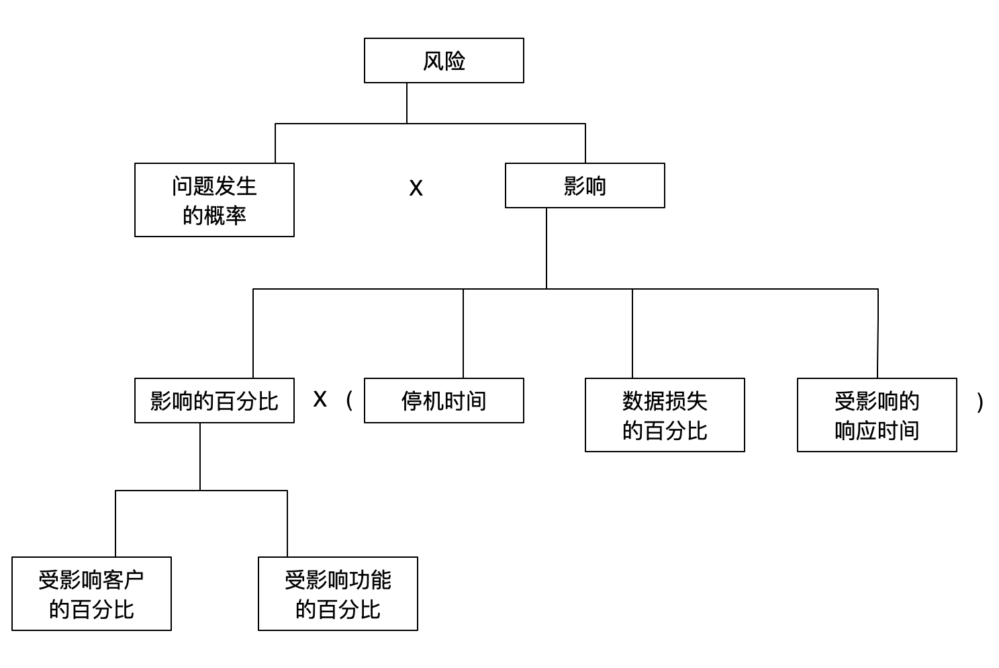

规则1：避免过度设计：在设计中要警惕复杂的解决方案。过度设计有两大类：第一类指产品的设计和实施超过了实际的需求；第二类指所完成的产品过于复杂
要清楚地认识到自己的工作是研发简单、易懂的解决方案，并通过这些方案为股东保持和创造价值
规则2：方案中包括扩展：提供及时可扩展性的DID方法。Design（D）设计20倍的容量；Implement（I）实施3倍的容量；Deploy（D）部署1.5倍的容量；
扩展具有弹性，它既可以扩张也可以收缩，我们的解决方案应该文件和到这两个方面。因此，灵活性是关键，因为你需要响应客户的请求，随着规模的收缩和扩张，在系统之间调整容量
规则3：三次简化方案：在设计复杂系统时，从项目的范围、设计和实施角度简化方案。采用帕累托（Pareto）原则简化范围；考虑成本优化和可扩展性来简化设计；依靠其他人的经验来简化部署；
首先那打被广泛采用的开源或第三方解决方案来满足需求。如果那些都不存在，那么我们应该看看在组织内部是否有人已经准备了可扩展的解决方案来解决问题。在没有专有解决方案的情况下，我们应该再从外部看看是否有人已经描述了一种可以合法复制或模仿的可扩展方案
规则4：减少域名解析：从用户角度减少域名解析次数。尽量减少下载页面所需的域名解析次数，但要保持与浏览器的并发连接平衡
规则5：减少页面目标：尽可能减少网页上的对象数量。减少或者合并对象，但要平衡最大并发连接数；寻找机会减轻对象的重量；不断测试确保性能的提升
规则6：采用同构网络：确保交换机和路由器源于同一供应商。不要混合使用来自不同OEM的交换机和路由器；购买或者使用开源的其他网络设备（防火墙、负载均衡等）
规则7：X轴扩展：通常叫水平扩展，通过复制服务或数据库以分散事务处理带来的负载。克隆服务的同时配置负载均衡器；确保使用数据库的代码清楚读和写之间的区别
规则8：Y轴拆分：有时也称为服务或者资源扩展，本规则聚焦在沿着动词（服务）或名词（资源）的边界拆分数据集、交易和技术团队。用动词来拆分动作，用名词拆分资源，或者两者混用；沿着动词/名词定义的边界拆分服务和数据；
规则9：Z轴拆分：经常根据客户的独特属性（如ID、姓名、地理位置等）进行拆分。根据所知道的客户的属性（如ID、姓名、地理位置或设备）对数据和服务进行拆分
规则10：向外扩展：通过复制或拆分服务或数据库而分散事务负载的方法，与此相对的是向上扩展，即通过购买更大的硬件而实现的扩展。通常是简单地水平拆分
规则11：用商品化系统：尽可能采用小型廉价的系统。在生产环境中远离那些庞大的系统
规则12：托管方案扩展：把系统部署到三个或更多活的数据中心，以降低总体成本、增加可用性并实现灾难恢复。数据中心可以是自有设施、托管或云计算（IaaS或PaaS）实例。以”多活“方式配置系统；使用Iaas/PaaS（云计算）来解决突发容量问题，新投资或者作为三数据中心方案的一部分
多活数据中心的架构考虑因素：
尽可能消除对状态的需要
尽可能减少动态调用，将客户路由到最近的数据中心
研究数据库和状态的复制技术
规则13：利用云：有目的地利用云技术按需扩展。采用第三方云环境应对临时需求，如季节性业务变动、大的批处理任务或者是测试中需要的QA环境；当用户请求超过某个峰值时，把应用设计成可以从第三方云环境对外提供服务。扩展云以应对高峰期，然后再把活跃的节点数减少到基本水平；
规则14：适当使用数据库：当需要ACID属性来保持数据之间的关系和一致性时，可以使用关系型数据库。其它安所的存储需要考虑更适合的工具，如NoSQL、DBMS。考虑数据量、存储量、响应时间长短、关系的其他因素来选择适当的存储工具；也要考虑数据结构以及产品需要对数据进行的管理和操作
规则15：慎重使用防火墙：只有在能够显著降低风险时才使用防火墙。要认识到防火墙会导致可扩展性和可用性的问题。可以使用防火墙来满足关键的PII、PCI（支付卡行业）的合规性要求。不要用在低价值的静态内容防护上
规则16：积极使用日志文件：使用应用日志文件来诊断和预防问题。使用任何监控工具，从自定义脚本到Splunk或ELK框架，监视应用日志中的错误；导出这些错误信息，然后安排资源去确定和解决问题
规则17：避免画蛇添足：避免翻来覆去地检查刚完成的工作或马上读取刚写入的数据。避免为了确认操作是否有效而读取刚写入的数据，如近期处理需要，可把数据存储在本地或分布式缓存
规则18：停止重定向：如果有可能，避免重定向；确实需要时，采用正确的方法。如果需要重定向，考虑通过服务器配置来实现，而不是利用HTML或者其他基于代码的解决方案
规则19：放宽时间约束：尽可能放宽系统中的时间约束。放宽业务规则的约束
规则20：利用CDN缓存：用CDN（内容分发网络）来减少网站的负载。大多数CDN借助DNS为网站 提供内容；因此可能需要在DNS上做些小改动或者添加记录，以便把提供内容的网址迁移到新的子域名上
规则21：灵活管理缓存：使用Expires头来减少请求量，提高系统的可扩展性和性能。可以通过应用代码在网络服务器上设置头字节
规则22：利用Ajax缓存：适当使用HTTP响应头以确保Ajax调用可以缓存。适当调整Last-Modified、Cache-Control和Expires头
规则23：利用页面缓存：在网络服务的前端部署页面缓存。选择缓存的解决方案然后部署
规则24：利用应用缓存：使用应用缓存以成本效益方式扩展。要最大化应用缓存的影响，首先分析如何拆分架构
规则25：利用对象缓存：实现对象缓存以帮助扩展持久层。选择任何开源或有供应商支持的解决方案和在应用代码中实现
规则26：独立对象缓存：在架构中采用单独的对象缓存层。将对象缓存移到自己的服务器上
规则27：失败乃成功之母：抓住每个机会，尤其是失败的机会，学习经验并吸取教训。观察客户或用A/B测试验证；建立事后分析过程，在低故障率环境下采用假设失败的方法
如果想在技术和商业动作上实现可扩展性，就必须不断地了解其他领域。绝不能让事件或问题从眼前溜过而不从中学习。网站的每个问题、事故或停机都是学习如何在未来把事情做得更好的机会
构建有效扩展且不经常出现故障的平台：
关注失败
拒绝简化解释
对操作的敏感性
坚持弹性承诺
尊重专业经验
规则28：不靠QA发现错误：利用QA降低产品交付成本，提高技术吞吐量，发现质量趋势，减少缺陷，但不提高质量。每当测试活动获得超过一个工程师的价值输出时，就雇用一个QA人员
测试无法成就系统质量。测试只能发现研发过程中带来的问题，其结果是找回被摧毁的价值
规则29：不能回滚注定失败：必须具备代码回滚的能力。清理代码并遵循几个简单的步骤以确保可以回滚代码
回滚的一些规则：
规则30：从事务处理中清除商务智能：业务系统与产品系统分离，产品智能与数据库系统分离。把存储过程从数据库迁移到应用逻辑；在公司和产品系统之间不做同步调用
规则31：注意昂贵的关系：注意数据模型中的关系。当设计数据模型时，考虑数据库分离和未来可能的数据需求
规则32：正确使用数据库锁：理解如何使用明锁和监控暗锁。在代码审查时注意明锁；监控数据库暗锁，并在必要时进行明确调整以保证适度的吞吐量；选择允许锁类型和粒度灵活性的数据库与存储引擎
规则33：禁用分阶段提交：不要使用分阶段提交协议来存储或处理事务。不用；采用Y轴或Z轴拆分数据存储和处理系统
规则34：慎用Select for Update：定义游标时，SELECT语句中尽量少用FOR UPDATE子句。审查游标开发并质疑每一个SELECT FOR UPDATE的使用；FOR UPDATE会导致行锁，可能减缓事务处理速度
规则35：避免选择所有列：不要在查询中使用Select * 。始终在查询语句中声明你要选择或插入数据的列
规则36：用“泳道”隔离故障：在设计中实现故障隔离区或泳道。沿Y或Z轴拆分持久层和服务，禁止故障隔离的服务和数据间同步通信或访问
故障隔离域是这样的一个域，当物理或逻辑服务因故障无法正常工作时，无论该故障是响应缓慢还是根本无法响应，唯一受到影响的是那些在故障域中的服务。在本质上，泳道旨在提高可扩展性和可用性，而不仅仅是一个可以扩展事务处理的机制
设计泳道原则：
规则37：拒绝单点故障：永远不要实施会带有单点故障的设计，一直要消除单点故障。在架构图上寻找单个实例；尽最大可能配制成主动/主动模式
规则38：避免系统串联：减少以串联方式连接的组件数量。删除不必要的组件、收起组件或添加多个并行组件以减少影响
规则39：启用与禁用功能：搭建一个框架来启用与禁用产品的功能。研发共享库以自动或基于请求的方式控制功能的启用与禁用
规则40：力求无状态：设计和实施无状态系统。尽可能选择无状态实施方案
规则41：在浏览器中保持会话数据：彻底避免会话数据，但需要时，考虑把数据保存在用户的浏览器中。在用户的浏览器中使用cookie来保存会话数据
规则42：用分布式缓存处理状态：使用分布式缓存在系统中存储会话数据。注意一些常见错误，如需要用户对Web服务器黏性的会话管理系统
分布式缓存的禁忌：
不要实施必须对服务器有黏性才能正常工作的系统
不要使用状态或会话复制来产生不同系统上的数据副本
不要把缓存放在执行任务的系统上
规则43：尽可能异步通信：尽可能优先考虑异步通信而不是同步通信。使用特定语言调用，以确保请求是以非阻塞方式发出且调用方不阻止等待响应
当所有的方法，服务和层通过同步调用绑在一起后，迟缓过故障将导致整个系统延迟而且连锁性故障
需要使用异步调用的：
外部API/第三方调用
长期运行的进程
经常改变且易出错/过于复杂的方法
时间约束
规则44：扩展消息总线：同任何物理或逻辑系统一样，消息总线也会因需求而失败。所以它们也需要扩展。采用Y和Z轴拆分
规则45：避免总线过度拥挤：总线流量仅限于那些价值高于处理成本的事件。以价值和成本判断消息流量；去除低价值、高成本的流量；抽样调整低价值/低成本和高价值/高成本以降低成本
规则46：警惕第三方方案。扩展自己的系统，不要依赖供应商的解决方案来实现可扩展性。尽可能用最简单的方式使用供应商提供的产品或服务
不应该下这样的定论：自己应该做每件事，例如编写自己的数据库或防火墙。选择性地使用供应商提供的部分东西，它们比你做得更好而且不是你的核心竞争力
规则47：梯级存储策略：将存储成本与数据价值匹配，包括删除价值低于存储成本的数据。使用近因、频率和货币化分析确定数据的价值；将存储成本与数据价值匹配
规则48：分类处理不同负载：通过分区和故障隔离，处理独特的工作负载，以最大限度地提高整体可用性、可扩展性和成本效益。确保解决方案支持四种基本类型的工作负载（归纳、演绎、批处理和用户交互/OLTP）而且彼此故障隔离，每种都存在于自己的故障隔离区内
规则49：完善监控：想想在设计时需要考虑什么才能监控应用。在系统中适当埋点以记录事务的时间
规则50：保持竞争力：让架构的每个组成部分都有竞争力或认同竞争力。对产品的每个组件，确定团队的责任和该组件 的竞争力水平
可以购买解决方案，但必须在部署和维护时保持竞争力。尽管不需要开发解决方案中的每一块（事实上，也不应该开发每一块），但是我们需要了解每一块。对自己所用的一切，我们需要知道如何正确地使用和妥善地维护，并且在发生故障时知道如何立即 恢复服务
可扩展性与可用性风险分解
